전기산업기사 (2013-08-18 기출문제)
1과목: 전기자기학
1. 인접 영구 자기 쌍극자가 크기는 같으나 방향이 서로 반대 방향으로 배열된 자성체를 어떤 자성체라 하는가?
- 반자성체
- 반강자성체
- 강자성체
- 상자성체
(정답률: 65%)

2. 길이가 50[cm], 단면의 반지름이 1[cm]인 원형의 가늘고 긴 공심 단층 원형 솔레노이드가 있다. 이 코일의 자기인덕턴스를 10[mH]로 하려면 권수는 약 몇 회인가? 단, 비투자율은 1이며, 솔레노이드 측면의 누설자속은 없다.
- 3560
- 3820
- 4300
- 5760
(정답률: 49%)
3. 무한평면 도체로부터 a[m] 떨어진 곳에 점전하 Q[C]이 있을 때 이 무한 평면도체 표면에 유도되는 면밀도가 최대인 점의 전하밀도는 몇 [C/m2]인가?
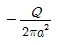
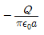
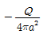
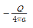
(정답률: 50%)
4. 전압 V로 충전된 용량 C의 콘덴서에 용량 2C의 콘덴서를 병렬 연결한 후의 단자전압은?
- V
- 2V
- V/2
- V/3
(정답률: 68%)
5. 전하 q[C]이 공기 중의 자계 H[AT/m] 내에서 자계와 수직방향으로 v[m/s]의 속도로 움직일 때 받는 힘은 몇 [N]인가?
- μ0qvH
- qvH/μ0
- qvH
- qH/μ0v
(정답률: 80%)
6. 두 자성체 경계면에서 정자계가 만족하는 것은?
- 자계의 법선성분이 같다.
- 자속밀도의 접선성분이 같다.
- 경계면상의 두 점간의 자위차가 같다.
- 자속은 투자율이 작은 자성체에 모인다.
(정답률: 76%)
7. 액체 유전체를 넣은 콘덴서의 용량이 20[㎌]이다. 여기에 500[V]의 전압을 가했을 때의 누설전류는 몇 [mA]인가? 단, 고유저항 p=1011[Ωㆍm], 비유전율 Es=2.2이다.
- 4.1
- 4.5
- 5.1
- 5.6
(정답률: 63%)
8. 비투자율 μs자속밀도 B[Wb/m2]의 자계 중에 있는 m[Wb]의 자극이 받는 힘은 몇 [N]인가?
- mB
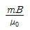
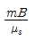
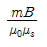
(정답률: 83%)
9. 유전율이 각각 ε1, ε2인 두 유전체가 접해 있는 경우, 경계면에서 전속선의 방향이 그림과 같이 될 때 ε1＞ε2이면 입사각과 굴절각은?
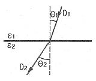
- θ1=θ2이다.
- θ1 ＞ θ2이다.
- θ1 ＜ θ2이다.
- θ1 + θ2=90°이다.
(정답률: 78%)
10. 100[kW]의 전력이 안테나에서 사방으로 균일하게 방사될 때 안테나에서 1[km]의 거리에 있는 전계의 실효값은 약 몇 [V/m]인가?
- 1.73
- 2.45
- 3.68
- 6.21
(정답률: 62%)
11. 전자유도작용에 벡터퍼텐셜을 A[Wb/m]라 할 때 유도되는 전계 E는 몇 [V/m]인가?
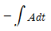
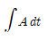
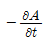
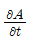
(정답률: 80%)
12. 히스테리시스 곡선(Hysteresis loop)에 대한 설명 중 틀린 것은?
- 자화의 경력이 있을 때나 없을 때나 곡선은 항상 같다.
- Y축(세로축)은 자속밀도이다.
- 자화력이 0일 때 남아있는 자기가 잔류자기이다.
- 잔류자기를 상쇄시키려면 역방향의 자화력을 가해야 한다.
(정답률: 63%)
13. 무한평면의 표면을 가진 비유전율 Es인 유전체의 표면전방의 공기 중 d[m] 지점에 놓인 점전하 Q[C]에 작용하는 힘은 몇 [N]인가?
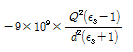
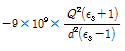
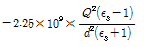
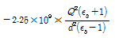
(정답률: 49%)
14. 자기인덕턴스가 각각 L1, L2인 두 코일을 서로 간섭이 없도록 병렬로 연결했을 때 그 합성 인덕턴스는?
- L1+L2
- L1L2
- L1+L2/L1L2
- L1L2/L1+L2
(정답률: 82%)
15. 유전율이 서로 다른 두 종류의 경계면에 전속과 전기력선이 수직으로 도달할 때 다음 설명 중 옳지 않은 것은?
- 전계의 세기는 연속이다.
- 전속밀도는 불변이다.
- 전속과 전기력선은 굴절하지 않는다.
- 전속선은 유전율이 큰 유전체 중으로 모이려는 성질이 있다.
(정답률: 48%)
16. 그림과 같이 진공 중에 자극면적이 2[cm2] 간격이 0.1[cm]인 자성체내에서 포화자속밀도가 2[Wb/m2]일 때 두자극면 사이에 작용하는 힘의 크기는 약 몇 [N]인가?
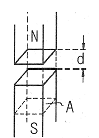
- 53
- 106
- 159
- 318
(정답률: 59%)
17. 등전위면을 따라 전하 Q[C]을 운반하는데 필요한 일은?
- 전하의 크기에 따라 변한다.
- 전위의 크기에 따라 변한다.
- 등전위면과 전기력선에 의하여 결정된다.
- 항상 0이다.
(정답률: 76%)
18. 코일에 있어서 자기인덕턴스는 다음 중 어떤 매질의 상수에 비례하는가?
- 저항률
- 유전율
- 투자율
- 도전율
(정답률: 60%)
19. 지표면에 대지로 향하는 300[V/m]의 전계가 있다면 지표면의 전하밀도의 크기는 몇 [C/m2]인가?
- 1.33 × 10-9
- 2.66 × 10-9
- 1.33 × 10-7
- 2.66 × 10-7
(정답률: 52%)
20. 공기 중에서 반지름 a[m], 도선의 중심축간 거리 d[m]인 평행도선 사이의 단위 길이당 정전용량은 몇 [F/m]인가? (단, d >> a 이다.)
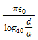
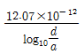
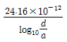
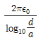
(정답률: 44%)
2과목: 전력공학
21. 차단기 개방시 재점호가 일어나기 쉬운 경우는?
- 1선 지락 전류인 경우
- 3상 단락 전류인 경우
- 무부하 변압기의 여자전류인 경우
- 무부하 충전전류인 경우
(정답률: 61%)
22. 충전전류는 일반적으로 어떤 전류인가?
- 앞선전류
- 뒤진전류
- 유효전류
- 누설전류
(정답률: 69%)
23. A, B 및 C상의 전류를 각각 Ia, Ib, Ic라 할 때,
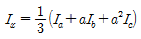
이고,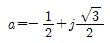
이다. Ix는 어떤 전류인가?- 정상전류
- 역상전류
- 영상전류
- 무효전류
(정답률: 67%)
24. 배전선로에서 사용하는 전압 조정 방법이 아닌 것은?
- 승압기 사용
- 저전압계전기 사용
- 병렬콘덴서 사용
- 주상변압기 탭 전환
(정답률: 58%)
25. 철탑의 사용목적에 의한 분류에서 송전선로 전부의 전선을 끌어당겨서 고정시킬 수 있도록 설계한 철탑으로 D형 철탑이라고도 하는 것은?
- 내장보강철탑
- 각도철탑
- 억류지지철탑
- 직선철탑
(정답률: 52%)
26. 그림과 같이 D[m]의 간격으로 반지름 r[m]의 두 전선 a, b가 평행하게 가선되어 있다고 한다. 작용인덕턴스 L[mH/km]의 표현으로 알맞은 것은?
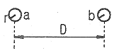
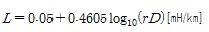
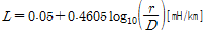
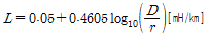
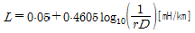
(정답률: 83%)
27. 다음 중 전력선반송 보호계전방식의 장점이 아닌 것은?
- 저주파 반송전류를 중첩시켜 사용하므로 계통의 신뢰도가 높아진다.
- 고장 구간의 선택이 확실하다.
- 동작이 예민하다.
- 고장점이나 계통의 여하에 불구하고 선택차단개소를 동시에 고속도 차단할 수 있다.
(정답률: 56%)
28. 다음 중 특유속도가 가장 작은 수차는?
- 프로펠러수차
- 프란시스수차
- 펠턴수차
- 카플란수차
(정답률: 63%)
29. 단거리 3상 3선식 송전선에서 전선의 중량은 전압이나 역률에 어떠한 관계에 있는가?
- 비례
- 반비례
- 제곱에 비례
- 제곱에 반비례
(정답률: 59%)
30. 저항 2[Ω], 유도리액턴스 10[Ω]의 단상 2선식 배전선로의 전압강하를 보상하기 위하여 부하단에 용량리액턴스 5[Ω]의 콘덴서를 삽입하였을 때 부하단 전압은 몇 [V] 인가? (단, 전원전압은 7000[V], 부하전류 200[A], 역률은 0.8(뒤짐)이다.)
- 6080
- 7000
- 7080
- 8120
(정답률: 49%)
31. 3상용 차단기의 정격차단용량은?
- 1/√3 × 정격전압 × 정격차단전류
- 1/√3 × 정격전압 × 정격전류
- √3 × 정격전압 × 정격전류
- √3 × 정격전압 × 정격차단전류
(정답률: 79%)
32. 송전선로에서 역섬락을 방지하는 유효한 방법은?
- 가공지선을 설치한다.
- 소호각을 설치한다.
- 탑각 접지 저항을 작게 한다.
- 피뢰기를 설치한다.
(정답률: 77%)
33. 다음 중 부하전류의 차단능력이 없는 것은?
- 부하개폐기(LBS)
- 유입차단기(OCB)
- 진공차단기(VCB)
- 단로기(DS)
(정답률: 81%)
34. 송전선로에 근접한 통신선에 유도장해가 발생한다. 정전유도의 원인과 관계가 있는 것은?
- 역상전압
- 영상전압
- 역상전류
- 정상전류
(정답률: 73%)
35. 페란티 현상이 발생하는 주된 원인은?
- 선로의 저항
- 선로의 인덕턴스
- 선로의 정전용량
- 선로의 누설콘덕턴스
(정답률: 77%)
36. "화력발전소의 ( ㉠ )은 발생 ( ㉡ )을 열량으로 환산한 값과 이것을 발생하기 위하여 소비된 ( ㉢ )의 보유열량 ( ㉣ )를 말한다."에서 ㉠ ~ ㉣의 ( ) 안에 들어갈 알맞은 내용은?
- ㉠ 손실율, ㉡ 발열량, ㉢ 물, ㉣ 차
- ㉠ 열효율, ㉡ 전력량, ㉢ 연료, ㉣ 비
- ㉠ 발전량, ㉡ 증기량, ㉢ 연료, ㉣ 결과
- ㉠ 연료소비율, ㉡ 증기량, ㉢ 물, ㉣ 차
(정답률: 77%)
37. 공칭단면적 200[mm2], 전선무게 1.838[kg/m], 전선의 외경 18.5[㎜]인 경동연선을 경간 200[m]로 가설하는 경우의 이도는 약 몇 [m]인가? (단, 경동연선의 전단 인장하중은 7910[kg], 빙설하중은 0.416[kg/m], 풍압하중은 1.525[kg/m], 안전율은 2.0이다.)
- 3.44
- 3.78
- 4.28
- 4.78
(정답률: 36%)
38. 선로길이 100[km], 송전단 전압 154[kV], 수전단 전압 140[kV]의 3상 3선식 정전압 송전선에서 선로정수는 저항 0.315[Ω/km], 리액턴스 1.035[Ω/km]라고 할 때 수전단 3상 전력 원선도의 반경을 [MVA]단위로 표시하면 약 얼마인가?
- 200[MVA]
- 300[MVA]
- 450[MVA]
- 600[MVA]
(정답률: 33%)
39. △결선의 3상 3선식 배전선로가 있다. 1선이 지락 하는 경우 건전상의 전위상승은 지락전의 몇 배인가?
- √3/2
- 1
- √2
- √3
(정답률: 72%)
40. 콘덴서 3개를 선간전압 6600[V], 주파수 60[Hz]의 선로에 △로 접속하여 60[kVA]가 되게 하려면 필요한 콘덴서 1개의 정전용량은 약 얼마인가?
- 약 1.2[㎌]
- 약 3.6[㎌]
- 7.2[㎌]
- 약 72[㎌]
(정답률: 39%)
3과목: 전기기기
41. 단자전압 100[V], 전기자 전류 10[A], 전기자 회로 저항 1[Ω], 회전수 1800[rpm]으로 전부하 운전하고 있는 직류 전동기의 토크는 약 몇 [kgㆍm]인가?
- 0.049
- 0.49
- 49
- 490
(정답률: 66%)
42. 단상 반파 정류로 직류 전압 50[V]를 얻으려고 한다. 다이오드의 최대 역전압 (PIV)은 약 몇 [V]인가?
- 111
- 141.4
- 157
- 314
(정답률: 49%)
43. 2대의 동기발전기가 병렬운전하고 있을 때 동기화 전류가 흐르는 경우는?
- 기전력의 크기에 차가 있을 때
- 기전력의 위상에 차가 있을 때
- 부하분담에 차가 있을 때
- 기전력의 파형에 차가 있을 때
(정답률: 70%)
44. 직류기에서 전기자 반작용을 방지하기 위한 보상권선의 전류방향은?
- 전기자 전류의 방향과 같다.
- 전기자 전류의 방향과 반대이다.
- 계자 전류의 방향과 같다.
- 계자 전류의 방향과 반대이다.
(정답률: 65%)
45. 전압비 3300/110[V], 1차 누설임피던스 Z1=12+j13[Ω], 2차 누설임피던스 Z2=0.015+j0.013[Ω]인 변압기가 있다. 1차로 환산된 등가임피던스[Ω]는?
- 25.5+j24.7
- 25.5+j22.7
- 24.7+j25.5
- 22.7+j25.5
(정답률: 55%)
46. 3상 동기발전기의 전기자 권선을 Y결선으로 하는 이유 중 △결선과 비교할 때 장점이 아닌 것은?
- 출력을 더욱 증대할 수 있다.
- 권선의 코로나 현상이 적다.
- 고조파 순환전류가 흐르지 않는다.
- 권선의 보호 및 이상전압의 방지대책이 용이하다.
(정답률: 54%)
47. 변압기 내부 고장 검출용으로 쓰이는 계전기는?
- 비율차동계전기
- 거리계전기
- 과전류계전기
- 방향단락계전기
(정답률: 77%)
48. 3상 유도전동기의 공급전압이 일정하고, 주파수가 정격값보다 수 [%] 감소할 때 다음 현상 중 옳지 않은 은?
- 동기속도가 감소한다.
- 누설 리액턴스가 증가한다.
- 철손이 약간 증가한다.
- 역률이 나빠진다.
(정답률: 54%)
49. 변압기 등가회로 작성에 필요하지 않은 시험은?
- 무부하 시험
- 단락시험
- 반환부하 시험
- 저항 측정시험
(정답률: 57%)
50. 75[kVA], 6000/200[V]의 단상변압기의 %임피던스 강하가 4[%]이다. 1차 단락전류[A]는?
- 512.5
- 412.5
- 312.5
- 212.5
(정답률: 57%)
51. △결선 변압기의 1대가 고장으로 제거되어 V결선으로 할 때 공급할 수 있는 전력은 고장 전 전력의 몇 [%]인가?
- 81.6
- 75.0
- 66.7
- 57.7
(정답률: 80%)
52. 직류 분권전동기의 운전 중 계자저항기의 저항을 증가하면 속도는 어떻게 되는가?
- 변하지 않는다.
- 증가한다.
- 감소한다.
- 정지한다.
(정답률: 66%)
53. 경부하로 회전중인 3상 농형 유도전동기에서 전원의 3선 중 1선이 개방되면 3상 전동기는?
- 개방시 바로 정지한다.
- 속도가 급상승한다.
- 회전을 계속한다.
- 일정시간 회전 후 정지한다.
(정답률: 61%)
54. 동기발전기의 자기여자 방지법이 아닌 것은?
- 발전기 2대 또는 3대를 병렬로 모선에 접속한다.
- 수전단에 동기조상기를 접속한다.
- 송전선로의 수전단에 변압기를 접속한다.
- 발전기의 단락비를 적게 한다.
(정답률: 64%)
55. 동기기에서 동기 임피던스 값과 실용상 같은 것은? (단, 전기자 저항은 무시한다.)
- 전기자 누설 리액턴스
- 동기 리액턴스
- 유도 리액턴스
- 등가 리액턴스
(정답률: 71%)
56. 균압선을 설치하여 병렬 운전하는 발전기는?
- 타여자 발전기
- 분권 발전기
- 복권 발전기
- 동기기
(정답률: 58%)
57. 정격부하를 걸고 16.3[kgㆍm]의 토크를 발생하며, 1200[rpm]으로 회전하는 어떤 직류 분권전동기의 역기전력이 100[V]일 때 전기자 전류는 약 몇 [A]인가?
- 100
- 150
- 175
- 200
(정답률: 50%)
58. 용량 2[kVA], 3000/100[V]의 단상변압기를 단권변압기로 연결해서 승압기로 사용할 때, 1차측에 3000[V]를 가할 경우 부하용량은 몇 [kVA] 인가?
- 16
- 32
- 50
- 62
(정답률: 45%)
59. 직류기에서 전기자 반작용이란 전기자 권선에 흐르는 전류로 인하여 생긴 자속이 무엇에 영향을 주는 현상인가?
- 모든 부분에 영향을 주는 현상
- 계자극에 영향을 주는 현상
- 감자 작용만을 하는 현상
- 편자 작용만을 하는 현상
(정답률: 74%)
60. 3상 유도전동기의 원선도 작성에 필요한 기본량이 아닌 것은?
- 저항 측정
- 슬립 측정
- 구속시험
- 무부하 시험
(정답률: 79%)
4과목: 회로이론
61. 1[mV]의 입력을 가했을 때 100[mV]의 출력 나오는 4단자 회로의 이득 [dB]은?
- 40
- 30
- 20
- 10
(정답률: 59%)
62. 그림과 같은 RC 직렬회로에 비정현파 전압
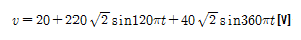
를 가할 때 제3고조파전류 i2[A]는 약 얼마인가?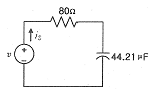
- 0.49sin(360πt-14.04°)
- 0.49√2sin(360πt-14.04°)
- 0.49sin(360πt+14.04°)
- 0.49√2sin(360πt+14.04°)
(정답률: 33%)
63. 그림과 같은 회로에서 15[Ω]에 흐르는 전류는 몇 [A]인가?
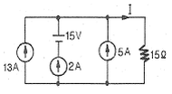
- 4[A]
- 8[A]
- 10[A]
- 20[A]
(정답률: 68%)
64. 다음 회로에서 정저항 회로가 되기 위해서는 1/wC의 값은 몇 [Ω]이면 되는가?
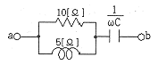
- 2
- 4
- 6
- 8
(정답률: 42%)
65. 내부저항이 15[㏀]이고 최대눈금이 150[V]인 전압계와 내부저항이 10[㏀]이고 최대눈금이 150[V]인 전압계가 있다. 두 전압계를 직렬 접속하여 측정하면 최대 몇 [V] 까지 측정할 수 있는가?
- 200
- 250
- 300
- 375
(정답률: 46%)
66. 6상 성형 상전압이 200[V]일 때 선간전압[V]은?
- 200
- 150
- 100
- 50
(정답률: 65%)
67. 그림과 같은 회로에서 스위치 S를 t=0에서 닫았을 때
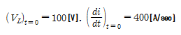
이다.L의 값은 몇 [H]인가?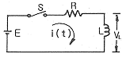
- 0.1
- 0.5
- 0.25
- 7.5
(정답률: 73%)
68. 어떤 회로의 전압 E, 전류 I일 때
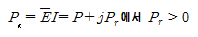
에서 Pr ＞ 0이다. 이 회로는 어떤 부하인가? (단,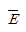
는 E의 공액복소수이다.)- 용량성
- 무유도성
- 유도성
- 정저항
(정답률: 61%)
69. 다음 그림과 같은 전기회로의 입력을 ei, 출력을 e0라고 할 때 전달함수는?
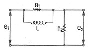
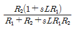
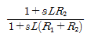
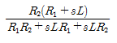
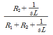
(정답률: 55%)
70. 변압비
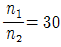
인 단상 변압기 3개를 1차 △결선, 2차 Y결선 하고, 1차 선간에 3000[V]를 가했을 때 무부하 2차 선간전압[V]은?- 100/√3[V]
- 190/√3 [V]
- 100[V]
- 100√3[V]
(정답률: 59%)
71.
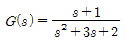
의 특성방정식의 근의 값은?- -2, 3
- 1, 2
- -2, -1
- 1, -3
(정답률: 67%)
72. e-atcoswt의 라플라스 변환은?
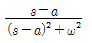
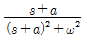
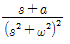
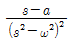
(정답률: 53%)
73.
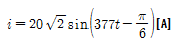
인 파형의 주파수는 몇 [Hz]인가?- 50
- 60
- 70
- 80
(정답률: 76%)
74. 그림에서 4단자망의 개방 순방향 전달 임피던스 Z21[Ω]과 단락 순방향 전달 어드미턴스 Y21[℧]은?
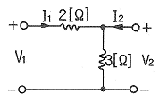
- Z21=5, Y21=-1/2
- Z21=3, Y21=-1/3
- Z21=3, Y21=-1/2
- Z21=5, Y21=-5/6
(정답률: 35%)
75. 불평형 3상 전류가 Ia=15+j2[A], Ib=-20-j14[A], Ic=-3+j10[A]일 때의 영상전류 I0는?
- 2.85+j0.36
- -2.67-j0.67
- 1.57-j3.25
- 12.67+j2
(정답률: 74%)
76. RLC 직렬회로에t=0에서 교류전압 e=Emsin(wt+θ)를 가할 때
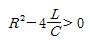
이면 이 회로는?- 진동적이다
- 비진동적이다
- 임계적이다
- 비감쇠진동이다
(정답률: 63%)
77. 그림과 같이 접속된 회로의 단자 a, b에서 본 등가임피던스는 어떻게 표현되는가?( 단, M[H]은 두 코일 L1, L2 사이의 상호인덕턴스이다.)
- R1+R2+jw(L1+L2)
- R1+R2+jw(L1-L2)
- R1+R2+jw(L1+L2+2M)
- R1+R2+jw(L1+L2-2M)
(정답률: 67%)
78. 그림과 같은 회로에 교류전압E=100∠0°[V]를 인가할 때 전전류 I는 몇 [A]인가?
- 6+j28
- 6-j28
- 28+j6
- 28-j6
(정답률: 42%)
79. 다음과 같은 회로에서 4단자 정수는 어떻게 되는가?
(정답률: 68%)
80. 교류의 파형률이란?
(정답률: 66%)
5과목: 전기설비기술기준 및 판단 기준
81. 고압 옥내배선의 공사법이 아닌 것은?
- 애자사용 공사
- 케이블 공사
- 금속관 공사
- 케이블 트레이 공사
(정답률: 47%)
82. 저압의 옥측배선 또는 옥외배선 시설로 잘못된 것은?
- 400[V] 이상 저압의 전개된 장소에 애자사용 공사로 시설
- 합성수지관 또는 금속관 공사, 가요전선관 공사로 시설
- 400[V] 이상 저압의 점검 가능한 은폐장소에 버스덕트 공사로 시설
- 옥내전로의 분기점에서 10[m] 이상인 저압의 옥측배선 또는 옥외배선의 개폐기를 옥내 전로용과 겸용으로 시설
(정답률: 48%)
83. 케이블을 사용하지 않은 154[kV] 가공송전선과 식물과의 최소 이격거리는 몇 [m]인가?
- 2.8
- 3.2
- 3.8
- 4.2
(정답률: 57%)
84. 전로에 시설하는 기계기구 중에서 외함 접지 공사를 생략할 수 없는 경우는?
- 사용전압이 직류 300[V] 또는 교류 대지전압이 150[V] 이하인 기계기구를 건조한 곳에 시설하는 경우
- 철대 또는 외함의 주위에 절연대를 시설하는 경우
- 전기용품안전관리법의 적용을 받는 2중 절연의 구조로 되어 있는 기계기구를 시설하는 경우
- 정격감도전류 20[mA], 동작시간이 0.5초인 전류동작형의 인체감전 보호용 누전차단기를 시설 하는 경우
(정답률: 53%)
85. 일반 주택의 저압 옥내배선을 점검하였더니 다음과 같이 시공되어 있었다. 잘못 시공된 것은?
- 욕실의 전등으로 방습 형광등이 시설되어 있다.
- 단상 3선식 인입개폐기의 중성선에 동판이 접속되어 있었다.
- 합성수지관공사의 관의 지지점간의 거리가 2[m]로 되어 있었다.
- 금속관공사로 시공하였고 절연전선을 사용하였다.
(정답률: 55%)
86. 고압 보안공사시에 지지물로 A종 철근 콘크리트주를 사용할 경우 경간은 몇 [m] 이하이어야 하는가?
- 50
- 100
- 150
- 400
(정답률: 58%)
87. 직류 귀선의 궤도 근접 부분이 금속제 지중관로와 1[km]안에 접근하는 경우에는 지중관로에 대한 어떤 장해를 방지하기 위한 조치를 취하여야 하는가?
- 전파에 의한 장해
- 전류누설에 의한 장해
- 전식작용에 의한 장해
- 토양붕괴에 의한 장해
(정답률: 50%)
88. 고압 가공전선을 ACSR선으로 쓸 때 안전율은 몇 이상의 이도로 시설하여야 하는가?
- 2.0
- 2.2
- 2.5
- 3.0
(정답률: 69%)
89. 동작시에 아크가 생기는 고압용 개폐기는 목재로부터 몇 [m] 이상 떼어놓아야 하는가?
- 1
- 1.2
- 1.5
- 2
(정답률: 46%)
90. 440[V] 옥내 배선에 연결된 전동기 회로의 절연저항의 최소값은 얼마인가?(오류 신고가 접수된 문제입니다. 반드시 정답과 해설을 확인하시기 바랍니다.)
- 0.1[㏁]
- 0.2[㏁]
- 0.4[㏁]
- 1[㏁]
(정답률: 50%)
91. 전기설비기준에서 사용되는 용어의 정의에 대한 설명으로 옳지 않은 것은?
- 접속설비란 공용 전력계통으로부터 특정 분산형전원 설치자의 전기설비에 이르기까지의 전선로와 이에 부속하는 개폐장치, 모선 및 기타 관련 설비를 말한다.
- 제1차 접근상태란 가공전선이 다른 시설물과 접근하는 경우에 다른 시설물의 위쪽 또는 옆쪽에서 수평거리로 3[m]미만인 곳에 시설되는 상태를 말한다.
- 계통연계란 분산형 전원을 송전사업자나 배전사업자의 전력계통에 접속하는 것을 말한다.
- 단독운전이란 전력계통의 일부가 전력계통의 전원과 전기적으로 분리된 상태에서 분산형 전원에 의해서만 가압되는 상태를 말한다.
(정답률: 63%)
92. 특고압 옥내배선과 저압 옥내전선ㆍ관등회로의 배선 또는 고압 옥내전선 사이의 이격거리는 일반적으로 몇 [cm] 이상이어야 하는가?
- 15
- 30
- 45
- 60
(정답률: 42%)
93. 다음 중 전로의 중성점 접지의 목적으로 거리가 먼 것은?
- 대지전압의 저하
- 이상전압의 억제
- 손실전력의 감소
- 보호장치의 확실한 동작의 확보
(정답률: 49%)
94. 특고압 지중전선과 고압 지중전선이 서로 교차하며, 각각의 지중전선을 견고한 난연성의 관에 넣어 시설하는 경우, 지중함 내 이외의 곳에서 상호간의 이격거리는 몇 [cm] 이하로 시설하여도 되는가?
- 30
- 60
- 100
- 120
(정답률: 30%)
95. 전력보안 가공 통신선을 횡단보도교 위에 시설하는 경우, 그노면상 높이는 몇 [m] 이상으로 하여야 하는가?
- 3.0
- 3.5
- 4.0
- 4.5
(정답률: 35%)
96. 발전소에 시설하여야 하는 계측장치가 계측할 대상이 아닌것은?
- 발전기, 연료전지의 전압 및 전류
- 발전기의 베어링 및 고정자 온도
- 고압용 변압기의 온도
- 주요 변압기의 전압 및 전류
(정답률: 53%)
97. 22.9[kV]의 특고압 가공전선로를 시가지에 시설할 경우 지표상의 최저 높이는 몇 [m] 이어야 하는가? (단, 전선은 특고압 절연전선이다.)
- 4
- 5
- 6
- 8
(정답률: 27%)
98. 특고압으로 가설할 수 없는 전선로는?
- 지중 전선로
- 옥상 전선로
- 가공 전선로
- 수중 전선로
(정답률: 69%)
99. 고압 가공전선로의 지지물이 B종 철주인 경우, 경간은 몇 [m] 이하이어야 하는가?
- 150
- 200
- 250
- 300
(정답률: 55%)
100. 전로에 시설하는 고압용 기계기구의 철대 및 금속제 외함의 접지공사는?(오류 신고가 접수된 문제입니다. 반드시 정답과 해설을 확인하시기 바랍니다.)
- 제1종
- 제2종
- 제3종
- 특별 제3종
(정답률: 36%)